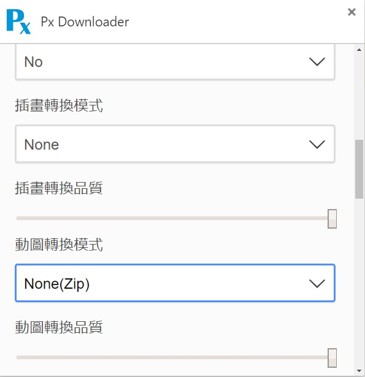
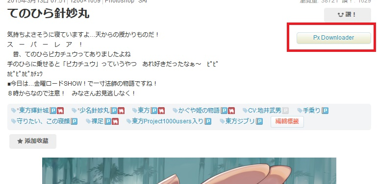

方法1：
要下載
Pixiv動圖 可以使用【
Px Downloader
】這個瀏覽器附加原件
裡面是日文，懶得點進去看的話就直接下載：
Px Downloader(google chrome)
Px Downloader(firefox 火狐)
安裝完後是中文的，保存動圖預設是儲存成GIF，如果要用【AeroPic】來瀏覽的話，可以改成【None(Zip)】。
對照表：
|
畫質 |
檔案大小 |
下載時間 |
普及性 |
| Zip |
高 |
小 |
0延遲 |
用AeroPic可以直接播放 |
| GIF |
低 |
大 |
很慢 |
普及性高，可張貼於各個論壇 |
| APNG |
高 |
大到嚇死人 |
普通 |
普及性低，chrome無法播放，且多數論壇都不支援 |
| WebP |
高 |
非常大 |
快 |
普及性低，只有chrome跟火狐可以播放，且多數論壇都不支援 |
截圖：

安裝完後，標題的右下方會多出一個按鈕，點了就會下載
